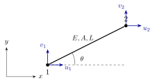
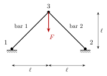

Lecture 3
Trusses in the Plane
Lecture 2 earned us deep foundations; this lecture banks a quick, satisfying profit on the engineering side: real two-dimensional trusses — roof structures, bridges, cranes — with nothing new except geometry. Every concept (element matrix, assembly, conjugate pairs, partitioned solve, energy) carries over unchanged.
3.1 New bookkeeping: two numbers per node
In the plane, a node \(i\) displaces in two directions: \(u_i\) (horizontal) and \(v_i\) (vertical). We speak of two degrees of freedom (DOFs) per node, and it is DOFs, not nodes, that count from now on: a truss with \(n\) nodes has \(2n\) DOFs, the global matrix is \(2n\times 2n\), and the conjugate-pair rule of Section 1.5 applies per DOF: for each of \(u_i, v_i\) separately, either the displacement or the matching force component is prescribed. (A typical pin support fixes both; a roller fixes one and leaves the other free, i.e. zero force.)
A convenient numbering convention: node \(i\) owns global DOFs \(2i-1\) and \(2i\). This is the entire “difficulty” of 2D assembly.
3.2 How much does an inclined bar stretch?

Consider a bar from node 1 to node 2, at angle \(\theta\) to the \(x\)-axis (Fig. 3.1); write \(c=\cos\theta\), \(s=\sin\theta\). The bar is a pin-jointed member: it only resists change of its length. Which combination of the four DOFs changes the length? Only the part of the relative displacement that points along the bar. Projecting the relative displacement \((u_2-u_1,\; v_2-v_1)\) onto the bar axis, i.e. taking its dot product with the unit vector \((c,s)\) along the bar: \[\Delta \;=\; (u_2-u_1)\,c + (v_2-v_1)\,s \;=\; \underbrace{\begin{bmatrix} -c & -s & c & s \end{bmatrix}}_{\textstyle \mathbf{a}^{\mathsf{T}}} \underbrace{\begin{bmatrix} u_1\\ v_1\\ u_2\\ v_2\end{bmatrix}}_{\textstyle \mathbf{d}} . \tag{3.1}\] (This uses the small-displacement assumption: displacements small enough that the angle \(\theta\) itself does not noticeably change. Sideways motion then rotates the bar without stretching it, to first order.)
3.3 The element matrix, by energy
We could now carefully balance forces at both nodes; instead, let the energy method of Section 1.6 do the thinking. The bar is a spring of stiffness \(k = EA/L\) with elongation \(\Delta = \mathbf{a}^{\mathsf{T}}\mathbf{d}\), so its stored energy is \[\Pi^e_{\mathrm{int}} = \tfrac12\,k\,\Delta^2 = \tfrac12\,k\,(\mathbf{a}^{\mathsf{T}}\mathbf{d})^2 = \tfrac12\,\mathbf{d}^{\mathsf{T}}\bigl(k\,\mathbf{a}\,\mathbf{a}^{\mathsf{T}}\bigr)\,\mathbf{d} \qquad\Longrightarrow\qquad \mathbf{k}^e = k\,\mathbf{a}\,\mathbf{a}^{\mathsf{T}}.\] Multiplying out the outer product \(\mathbf{a}\,\mathbf{a}^{\mathsf{T}}\): \[\mathbf{k}^e \;=\; \frac{EA}{L} \begin{bmatrix} c^2 & cs & -c^2 & -cs\\ cs & s^2 & -cs & -s^2\\ -c^2 & -cs & c^2 & cs\\ -cs & -s^2 & cs & s^2 \end{bmatrix} \qquad (c=\cos\theta,\ s=\sin\theta). \tag{3.2}\] Sanity checks you should actually perform: for \(\theta=0\) the matrix collapses to the 1D matrix (1.2) padded with zero rows/columns for \(v_1,v_2\) (a horizontal bar does not resist vertical nodal motion — to first order). It is symmetric. It is singular: its rank is 1, so it has three zero-energy modes, the plane’s two translations and one (small) rotation. The rotation is the sideways motion of one end relative to the other. All stiffness lives in the single stretching combination \(\mathbf{a}^{\mathsf{T}}\mathbf{d}\).
Remark
Textbooks often derive (3.2) by writing the \(1\)D matrix in local coordinates and sandwiching it between rotation matrices, \(\mathbf{k}^e = \mathbf{T}^{\mathsf{T}}\mathbf{k}_{\mathrm{loc}} \mathbf{T}\) — the local–global transformation. That derivation and ours are the same computation in different clothes; \(\mathbf{a}^{\mathsf{T}}\) is the two axial rows of \(\mathbf{T}\) combined by the 1D difference \([-1,\ 1]\). Keep the transformation picture in mind for later: beams and shells in 3D use it heavily.
3.4 Assembly with a DOF table
Assembly is Lecture 1 with a lookup table. For each element, list the global DOF numbers of its four local DOFs; add each entry of \(\mathbf{k}^e\) into the global slot given by the table. For a bar from node \(i\) to node \(j\): \[\text{local } (1,2,3,4) \;\longmapsto\; \text{global } (2i\!-\!1,\; 2i,\; 2j\!-\!1,\; 2j).\] This small table is called the element’s connectivity or location array — in code, literally one line per element. Nothing else about assembly changes.
3.5 Worked example: the two-bar truss

The structure of Fig. 3.2: nodes \(1\,(0,0)\) and \(2\,(2\ell,0)\) pinned to the ground, node \(3\,(\ell,\ell)\) loaded downwards by \(F\). Both bars share \(E\), \(A\), and length \(L = \ell\sqrt2\), so \(k = EA/(\ell\sqrt2)\).
Element data. Bar 1 runs \(1\!\to\!3\) at \(\theta_1 = 45^\circ\): \(c = s = \tfrac{\sqrt2}{2}\), hence \(c^2 = s^2 = cs = \tfrac12\). Bar 2 runs \(2\!\to\!3\) at \(\theta_2 = 135^\circ\): \(c = -\tfrac{\sqrt2}{2}\), \(s=\tfrac{\sqrt2}{2}\), hence \(c^2 = s^2 = \tfrac12\), \(cs = -\tfrac12\).
Boundary conditions. Nodes 1 and 2 fully fixed (\(u_1{=}v_1{=}u_2{=}v_2{=}0\)); free DOFs are only \((u_3, v_3)\) with loads \((0, -F)\). So — partitioning (1.5) — we only ever need the \(2\times2\) block of the global matrix belonging to node 3. Both bars contribute their lower-right \(2\times2\) corner of (3.2): \[\mathbf{K}_{ff} = k\begin{bmatrix} \tfrac12 & \tfrac12\\ \tfrac12 & \tfrac12\end{bmatrix} + k\begin{bmatrix} \tfrac12 & -\tfrac12\\ -\tfrac12 & \tfrac12\end{bmatrix} = k\begin{bmatrix} 1 & 0\\ 0 & 1\end{bmatrix}.\] (The off-diagonal terms cancel by symmetry of the geometry — a small pleasure.) Solve: \[k\begin{bmatrix} 1&0\\0&1 \end{bmatrix} \begin{bmatrix} u_3\\ v_3\end{bmatrix} = \begin{bmatrix} 0\\ -F\end{bmatrix} \quad\Longrightarrow\quad u_3 = 0, \qquad v_3 = -\frac{F}{k} = -\frac{\sqrt2\,F \ell}{EA} .\] The apex drops straight down, as symmetry demands.
Post-processing: member forces. Each bar’s axial force is \(N = k\,\Delta\) with \(\Delta\) from (3.1). Bar 1 (\(\mathbf{d} = [0,0,u_3,v_3]^{\mathsf{T}}\)): \[\Delta_1 = c\,u_3 + s\,v_3 = \frac{\sqrt2}{2}\Bigl(-\frac{\sqrt2\,F\ell}{EA}\Bigr) = -\frac{F\ell}{EA}, \qquad N_1 = k\,\Delta_1 = -\frac{F}{\sqrt2}.\] By symmetry \(N_2 = -F/\sqrt2\) as well: both bars in compression, each carrying \(F/\sqrt2\). Elementary statics at node 3 (two \(45^\circ\) members supporting a vertical load) gives exactly this — always close the loop with such a check. Reactions follow from \(\mathbf{f}_p = \mathbf{K}_{pf}\mathbf{u}_f\): \(\mathbf{f}_p = [\tfrac F2,\ \tfrac F2,\ -\tfrac F2,\ \tfrac F2]^{\mathsf{T}}\) for \((u_1,v_1,u_2,v_2)\): each support pushes up \(F/2\) and inward \(F/2\) (the compressed bars push the supports outward and down), and the global force balance \(\sum F_x = \sum F_y = 0\) holds.
Remark
Notice how little of the global \(6\times6\) matrix we ever touched. The partitioned formulation (1.5) is not just notation — it tells you what you may ignore. In hand calculations, assemble only \(\mathbf{K}_{ff}\) (and later the rows you need for reactions). Computers, less lazy, assemble everything; the arithmetic is the same.
3.6 What a truss is not
A warning before we leave the comfortable world of bars. The truss model answers questions about structures built of slender members, and for those it is excellent. But notice what it never does: it never approximates a continuous field over a two-dimensional region. There is material only along the lines; between the bars is nothing. The displacement “field” of a truss is defined on the members alone, and making the mesh of bars finer does not converge to the behavior of a solid plate — a grid of pin-jointed bars is simply a different (and much softer) structure than a continuous sheet of metal. The bar element is a structural member, not a piece of discretized continuum.
Looking ahead
To compute a genuinely two-dimensional object — a plate with a hole, a dam cross-section, a bracket — we must return to the Lecture 2 program: differential equations on a 2D domain, weak form, shape functions on a mesh of small areas. The simplest area is a triangle, and the triangle with linear shape functions is the hydrogen atom of continuum finite elements. That is Lecture 4 — where the mathematical machinery, built in 1D where we could still check everything against intuition, finally pays for itself: it will hand us the triangle’s \(6\times6\) stiffness matrix as mechanically as it handed us \(\frac{EA}{h}\bigl[\begin{smallmatrix}1&-1\\-1&1\end{smallmatrix}\bigr]\).